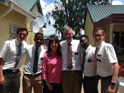
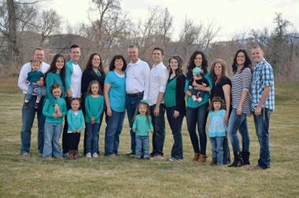
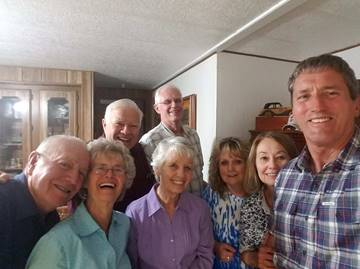
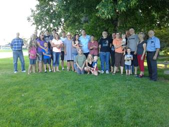
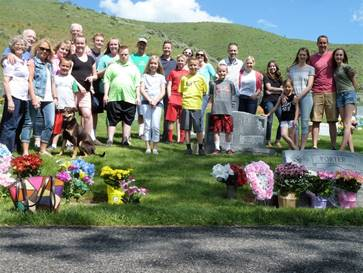
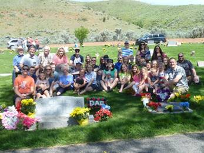

SIBLINGS UPDATE:
I am so blessed to have four wonderful brothers (3 are still living in 2017), and a wonderful, beautiful sister. I am so thankful for all of them and their special spouses and families. I am thankful for the wonderful memories of growing up with them, and growing old with them. I am thankful that we all love each other, our families and the Lord. We were all in the temple a short while before Kim & Jeanenne went on their 2nd mission. This time to Africa. I started crying in the Celestial room of the Ogden Temple as I stood there with all of them and their spouses, who I love very much also. I felt that dad and mom were there with us and proud of us that we are all trying to endure to the end so we can come home to our Heavenly parents and be with them eternally.
HAL: Hall passed away years ago, but I still think of him and I love him and will be happy to see him again after this life. I don’t know where he will be, but I know he won’t be in Hell, and I know I will see him and hug him again.
This is Samantha “Sam”, Cindy’s daughter and Hal and Jean’s granddaughter. Sam is now grown, married and is a lawyer.
BRYCE: Bryce & Deanna went to Spain on their mission. It was a hard mission for them and their mission president wasn’t like our President Brimhall. He wasn’t very kind and was very strict. He didn’t allow them senior couple privileges, like we had, and most senior couples have. We worked hard and enjoyed serving, but we did have some fun times with the other couple missionaries and sometimes with he and Sister Brimhall. Bryce and Deanna sold their home in Clearfield and bought a home in Willard. They like it there. Deanna is the Relief Society President. She had a cancerous tumor in her liver. They had to shrink it by use of chemotherapy, as it was the size of a softball, so they couldn’t operate with it that large. They did shrink it and then operated and removed it. That was in 2015. She recovered, but in 2017 they found two more. They were small, so they operated again in September? to remove them. This was a harder operation on her, but she is doing much better now (December 2017). Deanna had two wonderful counselors who did the leg work for Deanna throughout these two operations and recoveries and she would communicate with them by phone or email, and when doing better, she had meetings at her home. Deanna is such a wonderful spiritual lady, and I love her. Our children love her too. Actually, I don’t know anyone who doesn’t. Bryce is the same “funny” guy. You never know what he is going to say. He embarrasses Deanna at times and upsets her at times, but she loves him, and they have a good marriage. Bryce is so good hearted, he would give you the shirt off his back if he thought you needed it. I sure love him.
TERRY: Terry & Angela moved to Chubbuck, Idaho in 2015. Maleah and her family have lived there for several years. Terry loved it in Alaska, but the cold and darkness of 9 months out of the year were hard on Angela, so after Angela retired from working at the school, they moved down. They are happy to be close to Maleah, Troy and their family, but they miss their three sons who still live in Alaska with their families. Terry & Angela do go there to visit and tend grandchildren fairly often, however. We are happy that they are closer to us now and can attend our Sibling get togethers and other family reunions and activities. Terry is our “tall” porter. He is 6’5” tall and he is still quite thin. He is usually really happy and fun to be around. Two of his sons have left the church, so that is a heartache for Terry & Angela. Their son, David, had problems with his dad and treated him very bad for several years. They are finally getting back together now and Terry is sure happy about that. Angela is a wonderful sister-in-law too and I love her.
GEORGIA: I have always been thankful for Georgia. It is great to have brothers, but a girl needs a sister too. Girls can talk about everything and anything to each other. Men don’t need to talk like women do. Ken and I have moved several times and especially when we lived in Arizona, Georgia and I couldn’t do much together, but when we moved to Layton her and I would get together at least monthly and either go to lunch together where we could spend time visiting, or go walking and talking together. Just before her and Rick left for their mission to Austria, she rented a cabin at the Coleville Camper World and her and I stayed there for a couple of days. We ate and talked, and walked and talked and had so much fun. Rich is a wonderful guy. He was a fabulous seminary teacher for 30 years and all his students loved him. He has been a Bishop for a young singles ward and they all loved him. Most everyone loves him, but he has a mental problem – a foiba which has caused Georgia untold misery over the years. It was finally diagnosed and was explained to her why he treats her this way. He loves her, but with this sickness, they are good to everyone else except their spouses. They have been to marriage counselors and he is doing much better now, but still not all the time. When Georgia & Rick went on their mission to Austria, after both of them retired, they were excited to go. I received emails from Georgia saying that her hands and head burned so bad that she could hardly stand it. She went to doctors and got medicine, etc., She wasn’t able to cook and since they were on a CES Mission where they had Family Home Evenings, activities, breakfasts and Dinners, one of her main responsibilities was to cook meals and refreshments. This she couldn’t do with her hands so bad. Another couple missionary had to take over for a while and Rick had to cook. Her hands finally got better, but her hair was coming out in brushfuls, she said, and her head burned and hurt to touch it. She realized it was from stress and much of it came from Rick as he was pressuring her to do more and be a better missionary. She was trying her best, but because of his problems, it was hard for her. Things got better when they got home and they are on another mission now (2017) This mission is in their stake and a Salt Lake stake, so they live at home. I hope things will be better for both of them on this mission. It seems to be. Their daughter, Kristy, has such terrible health problems and has had most of her life. She has also had two bad marriages, so Georgia & Rick try to help her as much as they can.
KIM: Kim and Jeanenne are such a wonderful couple and so spiritual. They have raised 7 children, but have had lots of heartache too. Their oldest son, Joshua, came home from his mission, a homosexual. He is married to a partner. They only have three out of their seven who are still active in the church – Charity, Summer and Caleb. The others are special women and are beautiful, but misled. Deseree, their second child, has had two bad marriages and is now living with a man and they just had a baby. She was so excited to be a mother. I hear that her guy is a good man and treats her good and that they plan to get married when Kim & Jeanenne get home from their mission. Summer, Mysha and Caleb are married and have cute families. Actually, Mysha and Johnny lost a baby a few years ago and haven’t been able to have anymore since until this year. They adopted a baby boy and then she gave birth to a son. Summer gave birth to a baby boy this year also. All these grandsons were born while Kim & Jeanenne are on their mission. I know this was hard for Jeanenne not to be there with her daughters and their new babies, but she will be blessed for her sacrifice. Kim and Jeanenne are on their second mission. Their first was to a country below India (can’t remember the name), and they are now in Africa. They are wonderful missionaries. They love all their children and grandchildren very much, and that is the key “LOVE”.
Sibling & Spouse Get-Togethers:
We decided a few years ago to have a sibling and spouse get together once every three months, and to take turns hosting them at our homes. These have been great and have kept us in touch with each other. We have a great meal, visit and sometimes play games. The year that we were in charge of the Bushnell Reunion, we spend these get-togethers planning and preparing for this reunion. Bryce & Deanna have a time-share condo and they have invited us all to go up there and spend a couple of days which was really fun. We went to the temple together last year and that was wonderful. When one couple was on their mission, we would miss them, but still held them every three months. It was great when Terry and Angela moved down from Alaska and could be with us at these and other reunions and activities.
This was a Browning reunion we held at a park in Roy in 2017. Irven had asked if I would plan this one. Shellie, Roy & Jase were here visiting, so they were able to be with us at this reunion also. Cheryl, Bob and their grandchildren came, Bruce came with his daughter and her family, Irven & Sandy with their son, Mark & his wife, Becky. Scott, Mishelle and their family came, plus Ken and I. So there wasn’t very many, but we had a good time anyway. We all brought pot luck items for our dinner. We visited and played lawn games and board games.

This was the Porter family on Memorial Day weekend at the Morgan Cemetery in 2016. We then went to the Morgan Park for lunch, games and visiting. The children had fun on the splash pad and the playground.

This is the Porter family at the cemetery in 2018